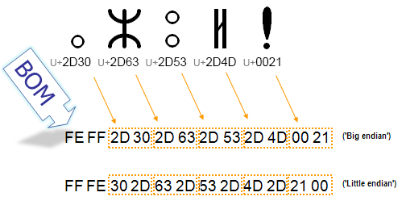
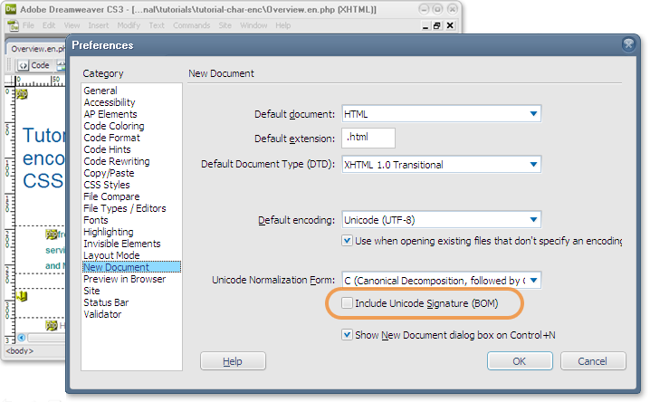

Qu’est-ce que l’indicateur d’ordre des octets ? Que dois-je savoir à son sujet lorsque je crée du contenu HTML ?
Au début d’une page qui utilise un encodage de caractères Unicode, vous pouvez trouver quelques octets qui représentent le point de code Unicode U+FEFF INDICATEUR D’ORDRE DES OCTETS. Son abréviation est « BOM » d’après le terme anglais « byte-order mark ».
Le nom INDICATEUR D’ORDRE DES OCTETS est un alias ; à l’origine, ce caractère s’appelait ESPACE INSÉCABLE SANS CHASSE (abrégé en ZWNBSP d’après le terme anglais « zero width no-break space »). Depuis l’introduction du caractère U+2060 GLUON DE MOTS, le caractère U+FEFF n’est plus utilisé dans son sens d’espace insécable sans chasse. Puisqu’il dispose d’un alias formel, le nom ESPACE INSÉCABLE SANS CHASSE n’est plus utile. Nous utiliserons donc son alias dans cet article.
Lorsqu’on l’utilise correctement, l’indicateur d’ordre des octets est invisible.
Avant l’introduction d’UTF-8 au début de l’année 1993, on transférait généralement le texte Unicode à l’aide d’un encodage appelé UCS-2 (l’ancêtre d’UTF-16). Dans cet encodage, les caractères étaient représentés par des mots (ou « unités de stockage ») de 16 bits. On pouvait stocker ces mots dans un flux d’octets de deux manières : en commençant par l’octet le plus significatif (ordre petit-boutiste) ou par le moins significatif (ordre gros-boutiste). Pour préciser dans quel ordre ils étaient stockés, on plaçait le caractère U+FEFF (l’indicateur d’ordre des octets) au début du flux. Il s’agissait d’un nombre magique qui ne faisait pas partie du texte représenté par le flux.
L’image ci-dessous illustre l’ordre des octets dans une séquence de caractères représentés chacun par deux octets. Chaque nombre hexadécimal à deux chiffres représente un octet dans le flux de texte. Comme vous pouvez le voir, avec un mécanisme gros-boutiste, l’ordre des deux octets qui représentent un seul caractère est inversé par rapport au mécanisme petit-boutiste. Le BOM renseigne sur l’ordre utilisé pour permettre aux applications de décoder immédiatement le contenu.

Dans l’encodage UTF-8, la présence de l’indicateur d’ordre des octets n’est pas essentielle. En effet, contrairement aux encodages UTF-16, un caractère UTF-8 n’a aucune séquence d’octets alternative. On peut tout de même trouver un BOM dans du texte encodé en UTF-8, soit parce qu’il résulte d’une conversion depuis un autre encodage, soit parce qu’un éditeur de texte l’a ajouté pour signaler que le contenu était encodé en UTF-8. Dans cette situation, on le désigne souvent par le terme signature UTF-8.
La plupart du temps, vous n’aurez pas à vous soucier du BOM UTF-8. Certains éditeurs de texte (comme le Bloc-Notes de Windows) ajoutent systématiquement un indicateur d’ordre des octets lorsque vous enregistrez un fichier avec l’encodage UTF-8. D’autres vous laissent le choix.
En HTML5, les navigateurs sont tenus de reconnaitre le BOM UTF-8 et de l’utiliser pour détecter l’encodage d’une page. Les versions récentes des principaux navigateurs gèrent l’indicateur d’ordre des octets de la manière attendue lorsqu’il est présent dans des pages encodées en UTF-8.
En plus d’être extrêmement court et stable, le BOM UTF-8 fonctionne en XML et en HTML. Il fonctionne même lorsque votre page n’est pas lue sur le réseau, contrairement aux déclarations HTTP. Par conséquent, il offre un moyen fiable de détecter l’encodage. Gardez toutefois à l’esprit qu’il vaut toujours mieux déclarer l’encodage de votre page à l’aide de l’élément meta en plus d’utiliser l’indicateur d’ordre des octets. Ainsi, l’encodage est visible des personnes qui consultent le code source.
Par ailleurs, le BOM peut poser problème dans de nombreuses situations, notamment parce qu’il est invisible. Pour en savoir plus à ce sujet, consultez la section Problèmes potentiels liés à l’indicateur d’ordre des octets UTF-8.
Si vous utilisez un encodage UTF-16 sur votre page (ce que nous vous déconseillons vivement), voici quelques aspects supplémentaires à prendre en compte.
Pour découvrir si une page contient un BOM (au début du contenu ou plus bas), vous pouvez utiliser le Vérificateur d’internationalisation du W3C. Si un indicateur d’ordre des octets se trouve au début de la page, sa présence sera indiquée dans le tableau « Information ». Si un BOM se trouve plus bas sur la page (par exemple, parce que du contenu est ajouté à la page depuis une source externe), sa présence sera indiquée dans la section « Detailed Report ».
Vous pouvez aussi chercher une signature UTF-8 en examinant votre contenu dans un éditeur de texte. Cependant, si votre éditeur gère correctement l’indicateur d’ordre des octets, celui-ci sera probablement invisible. Dans un éditeur binaire capable d’afficher les valeurs hexadécimales des octets de votre fichier, la signature UTF-8 s’affiche sous la forme « EF BB BF ».
Si votre éditeur ou navigateur applique le mauvais encodage de caractères à un fichier encodé en UTF-8 qui commence par un indicateur d’ordre des octets, vous verrez probablement une séquence d’octets au début de votre fichier. Il s’agit des octets qui composent cet indicateur, affichés sous la forme des caractères qu’ils représentent dans cet encodage. Avec l’encodage de caractères Latin-1 (ISO 8859-1), la signature s’affiche sous la forme des caractères .
Autrement, votre éditeur peut indiquer l’encodage de votre fichier dans une barre d’état ou dans un menu, en précisant si la signature UTF-8 s’y trouve ou non. Par exemple, si vous utilisez « Enregistrer sous » dans Dreamweaver avec un fichier qui commence par un BOM, vous constaterez que la case « Inclure une signature Unicode (BOM) » est cochée. Vous pouvez également déterminer dans vos préférences (comme sur l’image ci-dessous) si les nouveaux documents doivent inclure un indicateur d’ordre des octets par défaut.

Vous découvrirez ci-dessous quelques situations dans lesquelles le BOM peut poser problème.
En général, ces problèmes disparaissent avec l’adoption de nouvelles versions de navigateurs et d’outils d’édition. Il est utile de les connaitre si vos utilisateurs et utilisatrices continuent à employer des technologies plus anciennes. Cependant, ce n’est pas qu’une question de compatibilité avec d’anciennes versions.
Au moment de l’écriture de cet article, si vous utilisez la structure PHP include pour inclure dans une page un fichier externe qui commence par un indicateur d’ordre des octets, vous pouvez vous retrouver avec des lignes vierges.
En effet, puisque le BOM n’est pas retiré avant l’inclusion du fichier dans la page, il se comporte comme un caractère qui occupe une ligne de texte. Voici un exemple dans lequel deux lignes de texte sont incluses à partir de fichiers externes, dont l’un commence par un indicateur d’ordre des octets et l’autre non. Avant la première ligne, on peut voir une ligne vierge.
Avant d’inclure un fichier, vous devriez vous assurer qu’il ne commence pas par un BOM.
Vous pourriez également rencontrer des problèmes avec l’indicateur d’ordre des octets sur une page PHP ordinaire. Lorsque vous envoyez des en-têtes HTTP personnalisés, vous devez appeler le code de définition des en-têtes avant le début de l’affichage. Si un fichier commence par un BOM, la page débute l’affichage avant que les instructions de l’en-tête ne soient interprétées. Cela peut entrainer l’apparition de messages d’erreurs et d’autres problèmes sur la page affichée.
Veillez à tenir compte de l’indicateur d’ordre des octets dans les scripts ou le code programme qui traitent automatiquement des fichiers dans lesquels il est présent. Par exemple, si vous souhaitez utiliser le filtrage par motif au début d’un fichier qui commence par un BOM, vous devrez compléter votre code de manière à en détecter la présence éventuelle et à l’ignorer le cas échéant.
L’encodage UTF-8 sans indicateur d’ordre des octets a une propriété intéressante. Que l’on utilise l’encodage UTF-8 sans BOM ou l’encodage US-ASCII, un document composé uniquement de caractères de la gamme US-ASCII est encodé de la même manière (à l’octet près !). Il peut donc être traité et compris dans les deux cas. Lorsqu’on y ajoute un indicateur d’ordre des octets, il perd cette propriété, car on y insère alors des octets non ASCII. Par conséquent, si certains de vos processus ou scripts sont conçus pour traiter un contenu composé uniquement de caractères US-ASCII, vous devrez vous passer de BOM.
HTML5 a introduit des changements importants. Lors de la détection de l’encodage d’une page HTML, l’indicateur d’ordre des octets prévaut désormais sur toute déclaration d’encodage effectuée dans l’en-tête HTTP. Cela peut être très utile lorsque le serveur déclare que des pages utilisent un encodage différent d’UTF-8 et la personne qui a créé la page n’a pas le contrôle sur le paramètre d’encodage des caractères au niveau du serveur (ou n’a pas conscience de son effet). Si le BOM prévaut sur les en-têtes HTTP, l’encodage UTF-8 de la page devrait être correctement identifié.
Au moment de la rédaction de cet article, les navigateurs ne tiennent pas tous compte de ce changement de priorité. Vous ne devriez donc pas considérer que l’ensemble de votre public bénéficie de cette fonctionnalité pour le moment.
Dans les versions précédentes d’Internet Explorer, l’indicateur d’ordre des octets prévalait sur les en-têtes HTTP, mais dans IE10 et IE11, c’est l’inverse.
Dans les navigateurs pour lesquels l’en-tête HTTP prévaut toujours sur l’indicateur d’ordre des octets, lorsque le serveur déclare que des pages utilisent un encodage de caractères différent d’Unicode, vous aurez probablement deux surprises. D’une part, des caractères inattendus peuvent s’afficher au début de la page (comme  dans une page pour laquelle l’en-tête HTTP déclare l’encodage ISO 8859-1). D’autre part, les caractères non ASCII risquent de ne pas s’afficher correctement sur la page.
Si vous utilisez des applications ou des scripts dans le backend de votre site, vous devriez vérifier qu’ils peuvent également reconnaitre et gérer le BOM.
Nous vous déconseillons vivement de modifier l’encodage d’un fichier UTF-8 au profit d’un encodage autre qu’Unicode. Si vous devez tout de même le faire pour une raison exceptionnelle, veillez à retirer l’indicateur d’ordre des octets. Si vous le laissez, les navigateurs continueront à traiter votre contenu comme s’il était encodé en UTF-8 ou vous verrez s’afficher d’étranges caractères au début de votre page.
Si vous devez retirer l’indicateur d’ordre des octets, vérifiez que votre éditeur de texte vous permet d’ajouter ou de laisser une signature UTF-8 lors de l’enregistrement du fichier. Il devrait vous permettre de retirer facilement cette signature en ouvrant le fichier puis en l’enregistrant de nouveau. Par exemple, dans des éditeurs comme Notepad++ sous Windows et TextWrangler sous Mac, il est possible de sélectionner l’encodage dans une liste en utilisant la fonctionnalité « Enregistrer sous ». Cette liste permet d’enregistrer un fichier en UTF-8 avec ou sans BOM. Il vous suffit de choisir l’option sans BOM et d’enregistrer.
Si vous utilisez un script, vous avez l’avantage de pouvoir retirer la signature rapidement, y compris dans plusieurs fichiers. Vous pourriez même intégrer l’exécution automatique de ce script à votre processus.
Note : vous devriez évaluer l’impact du retrait de la signature sur votre processus. Il est possible qu’une partie de votre processus de développement de contenu s’appuie sur l’utilisation de la signature pour indiquer qu’un fichier est encodé en UTF-8. Gardez également à l’esprit qu’une page qui contient de nombreux caractères latins peut sembler correcte, mais contenir quelques caractères extérieurs à la gamme ASCII (U+0000 à U+007F) mal encodés.
Voici quelques remarques complémentaires pour les personnes qui encodent leurs pages HTML en UTF-16. Remarque : pour les pages HTML, il est recommandé d’utiliser UTF-8 et d’éviter UTF-16. Pour la plupart des gens, cette section sera donc théorique.
D’après les normes RFC 2718 et Unicode, si vous déclarez l’encodage de caractères UTF-16LE ou UTF-16BE dans l’en-tête HTTP de votre page, vous devriez vous passer d’indicateur d’ordre des octets au début de votre page. L’utilisation d’un BOM n’est appropriée que lorsque le charset IANA « UTF-16 » est précisé dans l’en-tête HTTP de la page.
Remarque : cela concerne uniquement l’étiquetage du contenu. Bien entendu, que vous indiquiez l’encodage UTF-16 en ajoutant un indicateur d’ordre des octets ou que vous indiquiez l’encodage UTF-16LE ou UTF-16BE, la séquence d’octets reste la même.
La spécification HTML5 interdit actuellement l’utilisation de toute autre déclaration d’encodage textuelle à l’intérieur du document pour les pages qui utilisent l’encodage UTF-16. En pratique, cela signifie que l’indicateur d’ordre des octets constitue lui-même la déclaration que vous devez ajouter.
De la même manière, vous devrez utiliser le BOM si vous déclarez l’encodage UTF-32, mais l’éviter si vous déclarez l’encodage UTF-32BE ou UTF-32LE. Toutefois, si nous n’avons pas mentionné l’encodage UTF-32 jusqu’à présent, c’est parce que son utilisation est vivement déconseillée pour le contenu HTML, et parce que certains navigateurs ne sont plus compatibles avec cet encodage.
Vous débutez ? Introduction aux jeux et encodages de caractères
Tutoriel, Gestion de l’encodage des caractères en HTML et CSS
Liens connexes, Créer du contenu HTML et CSS